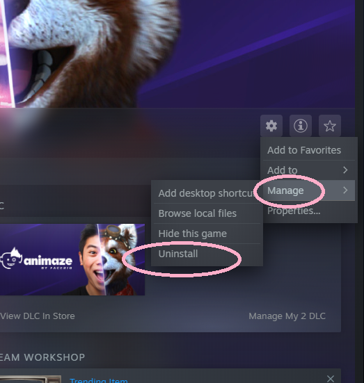
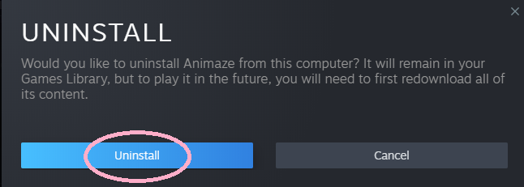

スクリーンが黒くなるのはなぜですか？
Animazeを開いた時にスクリーンが黒くなる場合、インストール時に問題が発生した可能性があります。そのため、Animazeを完全にアンインストールし、もう一度インストールすることで問題が解決する場合があります。
アンインストールするには、SteamライブラリからAnimazeを開き、設定メニューで、「管理」 -> 「アンインストール」の順にクリックします。

アンインストールの確認画面が表示されます

SteamからAnimazeをアンインストールした後、再度インストールする前に、ハードドライブからAnimazeのインストールフォルダーを完全に削除する必要があります。
削除するには、まずSteamフォルダーの中のAnimazeフォルダーを探します(デフォルトのファイルの場所:Animazeフォルダーを削除し、その後SteamからAnimazeを再インストールします。
Animazeの再インストール後に、必要な許可を設定します。詳細はこちらを参照してください